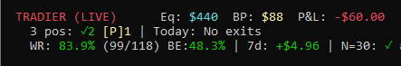

The story
Why this exists, from the person who built it. An 84% win rate and still losing money.
It started with failing, repeatedly
A friend introduced me to prop trading firms — pass their evaluation, trade their capital. I failed the tests. Not once: many times, and always the same way. Emotional overtrading. I knew the rules; I broke them anyway. The problem wasn't my analysis. It was my hands.
So I did what a developer does when the problem is human: I tried to remove the human. I built a trading bot.
Seven months of humility
I expected the hard part to be code. It wasn't. Over seven months I tried strategy after strategy before converging on something specific: small-cap stocks, up to five days held, a 5.5% profit target, a 25% stop loss. I funded a live account with $500 — a constraint that is itself a challenge under the pattern day trader rule — and let the machine trade.
Then the market taught me the lesson this whole site is about.
The math that humbles you
Win 5.5%, lose 25%: each loss erases about four and a half wins. The breakeven win rate for that configuration is 25 ÷ (25 + 5.5) ≈ 82%. My live account's win rate reached 83.9% — 99 winners out of 118 resolved trades — and the account was still down from where it started.

An 84% win rate, underwater. That was the insight I couldn't unlearn: win rate, alone, is close to meaningless. What matters is win rate relative to what your win and loss sizes require — and almost nobody who posts their results tells you the second number.
The record I wanted to read
Somewhere in month six, I went looking for signal providers worth learning from. What I found was an industry of screenshots. Track records that start after the losses. Winners posted, losers deleted. There was no way to tell skill from survivorship — because nothing prevented editing the past.
So I built the thing I couldn't find. Predictions locked before the open, settled by the market, impossible to edit. Everyone competes with the same simulated $500 — the stake I started with, because that number keeps everyone honest about scale. And the scoreboard ranks by a conservative bound on profit factor, not win rate — because I learned the hard way what an 84% win rate is worth.
The first user is the machine that started all this
The ledger's first record — prediction #1 — was posted by my trading bot, from the same signal engine that trades my live account. It was a loss, settled honestly, permanent. That's the point. My record keeps me honest here too.
Also published on Medium. A record of predictions, not investment advice.